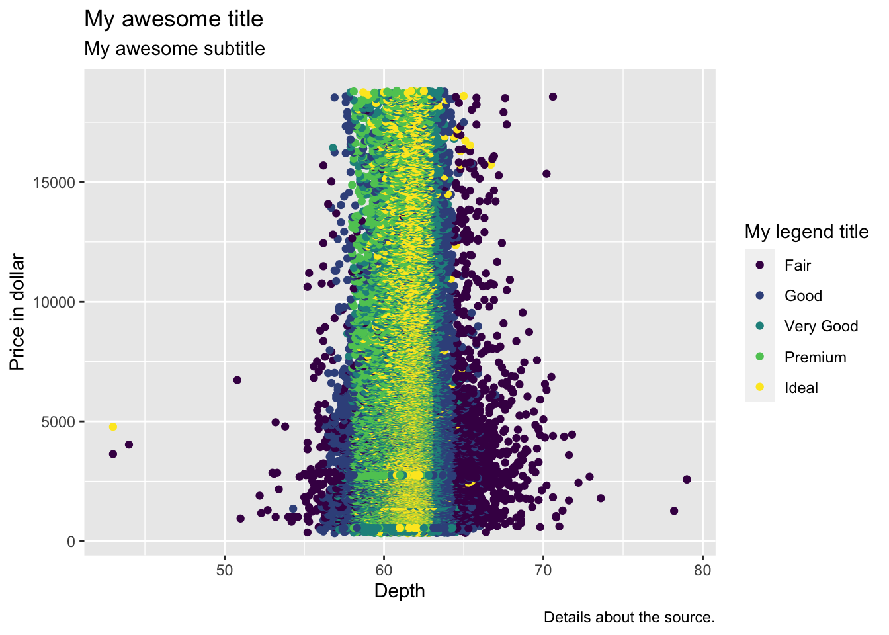

Introduction to ggplot2
Readings and class materials for Tuesday, October 10, 2023
Motivation for GGplot
Although it is possible to utilize base R itself (including diagrams created with the plot command here), this approach is seldom advised, except for its simplicity. Instead, it is highly recommended to employ ggplot2, which, despite being more intricate than base R, offers virtually unlimited possibilities for customization.

In addition to its enhanced visual aesthetics, the utilization of ggplot is motivated by a significantly more crucial factor. The package derives its name from the seminal work “Grammar of Graphics” authored by Leland Wilkinson, denoted by the abbreviation gg. This work laid the foundation for the fundamental structure of an ideal graphing algorithm. As ggplot2 adheres to these principles, one will observe that, while there may be numerous considerations to bear in mind, everything falls into place seamlessly. Once you have attained mastery in this subject matter (and engaged in further supplementary readings), you will possess the capability to generate any requisite diagrams. In my personal opinion, I firmly believe that constructing both simple and intricate plots serves as the optimal approach for comprehending your data and captivating the attention of others towards your research.
Introduction to ggplot
Ggplot2 can be installed standalone, or this package is part of a “package collection” called tidyverse. I highly recommend you to always start your session with loading the tidyverse, since this collection contains many crucial function for data analyses. Thus, depending on whether the package is already downloaded, install install.packages ("tidyverse") or if this is not the first time you use tidyverse on your computer, then load the packages with library(tidyverse).
With ggplot2 we get some additional data tables, for the sake of simplicity we now use diamonds of these. Let’s take a look at them:
diamonds# A tibble: 53,940 × 10
carat cut color clarity depth table price x y z
<dbl> <ord> <ord> <ord> <dbl> <dbl> <int> <dbl> <dbl> <dbl>
1 0.23 Ideal E SI2 61.5 55 326 3.95 3.98 2.43
2 0.21 Premium E SI1 59.8 61 326 3.89 3.84 2.31
3 0.23 Good E VS1 56.9 65 327 4.05 4.07 2.31
4 0.29 Premium I VS2 62.4 58 334 4.2 4.23 2.63
5 0.31 Good J SI2 63.3 58 335 4.34 4.35 2.75
6 0.24 Very Good J VVS2 62.8 57 336 3.94 3.96 2.48
7 0.24 Very Good I VVS1 62.3 57 336 3.95 3.98 2.47
8 0.26 Very Good H SI1 61.9 55 337 4.07 4.11 2.53
9 0.22 Fair E VS2 65.1 61 337 3.87 3.78 2.49
10 0.23 Very Good H VS1 59.4 61 338 4 4.05 2.39
# ℹ 53,930 more rowsLets see our first plot with ggplot.
ggplot(data = diamonds, mapping = aes(x = depth, y = price)) +
geom_point()This is a typical syntax for creating a plot with ggplot.
Each plot consist of 3 parts:
ggplotfunction with two inputs: whichdatato use and how (mapping)aesthetics: this is offen inserted into theggplotfunction (the mapping argument). The code above means that values ofdepthcolumns on the x-axis and values ofpricecolumn on the y-axisgeom: specifies the plot type, currently we create a point graph (scatter plot). Typegeomand hitTABto see all the possibilities.
We have many options to customise or plot. First, lets see what we can change inside the geom function.
Color
ggplot(data = diamonds, mapping = aes(x = depth, y = price)) +
geom_point(color = "blue")Size
ggplot(data = diamonds, mapping = aes(x = depth, y = price)) +
geom_point(size = 5)Shape
Only some geom functions have shape argument, but geom_point has. By that we can modify the shape type.
ggplot(data = diamonds, mapping = aes(x = depth, y = price)) +
geom_point(shape = 3) # change the shape of the pointsThis is important because the default shape type has only color argument. If you want border to your points then you have to change the shape to 21.
ggplot(data = diamonds, mapping = aes(x = depth, y = price)) +
geom_point(shape = 21, color = "blue", fill = "red")Aesthetics
In the examples above we used color, size and shape arguments in explicit way inside the geom function. But what if we want to add different colors based on the cut column or different shape (as this is usually required in academic papers). You have to add then these argument to the mapping with the aes function.
ggplot(data = diamonds, mapping = aes(x = depth, y = price, color = cut, shape = cut)) +
geom_point()Everything what is not x or y and is in the aes function appears on the legend. You can omit this by adding show.legend = FALSE:
ggplot(data = diamonds, mapping = aes(x = depth, y = price, color = cut, shape = cut)) +
geom_point(show.legend = FALSE) # hide legendcustomizing
You have to use the scale_ functions to specify the colors on the plot above. For academic work you must often use greyscale colors:
ggplot(data = diamonds, mapping = aes(x = depth, y = price, color = cut, shape = cut)) +
geom_point() +
scale_color_grey() # using greyscale colorsYou also have to add labels to your plot by the labs function:
ggplot(data = diamonds, mapping = aes(x = depth, y = price, color = cut)) +
geom_point() +
labs(
x = "Depth",
y = "Price in dollar",
title = "My awesome title",
color = "My legend title",
subtitle = "My awesome subtitle",
caption = "Details about the source."
)
We use theme for customizing how the plot looks.
ggplot(data = diamonds, mapping = aes(x = depth, y = price, color = cut, shape = cut)) +
geom_point() +
theme_minimal() + # theme with white backgroung and no axis line
theme(
axis.text = element_text(size = 30) # increase text size to unreasonable high
)Some available themes I recommend:
You can install packages to find even more themes, like {ggdark} for dark themes. I also add some other options on this example:
ggplot(data = diamonds) +
aes(x = depth, y = price, color = cut) +
geom_point() +
labs(x = "X-axis", y = "Y-axis",
title = "Nice title",
color = "New legend title",
subtitle = "Unknown years") +
scale_x_continuous(labels = function(x) str_c(x, "%"), # percentage on x-axis
limits = c(50, 70),
expand = c(0, 0) # axis line at the last observation
) +
scale_color_manual( # modify colors
values = c("red", "blue", "orange", "green", "grey")
) +
ggdark::dark_theme_classic() + # dark theme
theme(plot.title = element_text(color = "red", face = "bold")) # change title styleIf you want to use the same theme, then you can make it as default:
ggplot(diamonds, aes(depth, price)) +
geom_point()Geom
Lets see what other type of charts exist. For univariate continues data I recommend density, histogram and boxplot.
ggplot(diamonds, aes(price)) +
geom_density(color = "red", fill = "yellow")ggplot(diamonds, aes(price)) +
geom_histogram() +
scale_x_log10()ggplot(diamonds, aes(price)) +
geom_boxplot()What do we see on a boxplot?

If we are interested in the outlier, and our plan is to remove them, then it is a good idea to use the base R boxplot function.
boxplot(diamonds$price)This function has an advantage. Lets assign its output as bplot_output instead of simply plot it, while turning its plot argument to FALSE.
bplot_output <- boxplot(diamonds$price, plot = FALSE) # hide the plotbplot_output$stats
[,1]
[1,] 326.0
[2,] 950.0
[3,] 2401.0
[4,] 5324.5
[5,] 11886.0
$n
[1] 53940
$conf
[,1]
[1,] 2371.24
[2,] 2430.76
$out
[1] 11888 11888 11888 11897 11899 11899 11901 11903 11904 11905 11906 11912
[13] 11913 11917 11917 11921 11922 11923 11923 11923 11924 11925 11926 11927
[25] 11927 11933 11934 11935 11939 11942 11943 11946 11946 11946 11946 11948
[37] 11948 11950 11951 11954 11955 11956 11957 11957 11957 11958 11962 11963
[49] 11965 11966 11966 11967 11968 11968 11969 11970 11971 11971 11973 11975
[61] 11975 11975 11976 11979 11982 11985 11986 11988 11988 11988 11988 11990
[73] 11998 11999 12000 12004 12005 12008 12009 12012 12013 12014 12016 12021
[85] 12028 12030 12030 12030 12030 12030 12030 12031 12032 12035 12036 12038
[97] 12044 12047 12047 12048 12048 12048 12048 12052 12053 12055 12058 12059
[109] 12060 12061 12061 12063 12063 12066 12068 12069 12071 12071 12071 12075
[121] 12078 12078 12079 12081 12081 12082 12084 12084 12084 12085 12085 12087
[133] 12089 12092 12093 12094 12094 12095 12095 12098 12098 12098 12099 12099
[145] 12100 12100 12100 12100 12105 12108 12108 12109 12111 12112 12117 12119
[157] 12121 12121 12123 12127 12140 12141 12146 12148 12148 12150 12150 12151
[169] 12152 12152 12152 12153 12154 12155 12156 12156 12157 12161 12165 12168
[181] 12168 12168 12170 12171 12174 12175 12179 12179 12179 12179 12182 12182
[193] 12183 12185 12186 12190 12193 12195 12196 12196 12196 12196 12196 12196
[205] 12196 12199 12200 12202 12206 12207 12207 12209 12209 12209 12209 12210
[217] 12210 12210 12210 12210 12215 12215 12219 12220 12221 12224 12224 12224
[229] 12225 12226 12226 12228 12228 12229 12229 12230 12231 12232 12236 12237
[241] 12238 12238 12242 12244 12244 12247 12248 12252 12253 12255 12257 12257
[253] 12257 12260 12261 12261 12261 12261 12265 12267 12268 12268 12269 12271
[265] 12271 12271 12273 12282 12283 12284 12284 12285 12286 12288 12291 12291
[277] 12295 12295 12297 12300 12304 12305 12308 12308 12308 12308 12308 12308
[289] 12308 12308 12308 12311 12311 12314 12315 12316 12317 12319 12319 12320
[301] 12321 12327 12327 12332 12334 12336 12336 12338 12338 12338 12338 12338
[313] 12339 12341 12342 12342 12342 12342 12342 12342 12343 12345 12349 12356
[325] 12359 12360 12361 12361 12364 12364 12369 12369 12369 12369 12373 12375
[337] 12377 12377 12377 12378 12378 12379 12379 12380 12380 12381 12386 12386
[349] 12388 12389 12390 12392 12392 12392 12392 12394 12394 12396 12400 12401
[361] 12401 12401 12401 12403 12406 12407 12407 12409 12415 12416 12416 12417
[373] 12417 12418 12423 12423 12423 12429 12430 12431 12431 12432 12433 12437
[385] 12437 12440 12440 12443 12447 12450 12451 12454 12454 12454 12455 12458
[397] 12458 12459 12459 12459 12462 12465 12466 12467 12467 12468 12468 12474
[409] 12477 12483 12485 12489 12490 12492 12492 12493 12494 12494 12495 12498
[421] 12499 12499 12499 12500 12502 12506 12508 12509 12512 12515 12521 12522
[433] 12526 12529 12530 12530 12531 12531 12539 12539 12541 12542 12543 12545
[445] 12545 12545 12546 12547 12547 12549 12551 12551 12551 12551 12554 12554
[457] 12554 12554 12554 12554 12555 12556 12559 12561 12565 12566 12571 12573
[469] 12576 12576 12576 12581 12581 12581 12584 12587 12587 12587 12591 12592
[481] 12592 12596 12598 12602 12603 12605 12606 12606 12607 12607 12608 12610
[493] 12610 12612 12613 12614 12615 12616 12616 12617 12617 12617 12617 12618
[505] 12620 12621 12621 12621 12622 12622 12626 12629 12631 12633 12633 12637
[517] 12639 12641 12641 12642 12644 12644 12645 12646 12647 12648 12648 12648
[529] 12654 12654 12654 12654 12655 12655 12655 12657 12670 12671 12671 12672
[541] 12674 12674 12677 12677 12680 12680 12681 12681 12681 12681 12683 12686
[553] 12687 12688 12690 12693 12693 12696 12696 12696 12697 12698 12700 12702
[565] 12707 12707 12709 12712 12713 12713 12714 12716 12717 12717 12717 12720
[577] 12720 12722 12723 12725 12725 12730 12731 12734 12736 12736 12737 12737
[589] 12738 12738 12738 12738 12738 12743 12744 12745 12747 12748 12753 12754
[601] 12755 12755 12756 12756 12756 12756 12762 12764 12765 12765 12766 12768
[613] 12770 12770 12771 12773 12776 12778 12779 12779 12779 12787 12787 12787
[625] 12787 12787 12787 12788 12791 12791 12792 12794 12795 12798 12798 12799
[637] 12799 12800 12800 12809 12810 12811 12812 12814 12816 12818 12821 12821
[649] 12821 12822 12823 12823 12823 12825 12825 12828 12829 12829 12829 12829
[661] 12829 12830 12831 12831 12832 12832 12833 12839 12840 12840 12841 12842
[673] 12843 12844 12844 12845 12846 12846 12848 12848 12851 12853 12857 12857
[685] 12862 12862 12864 12865 12870 12870 12871 12872 12872 12872 12872 12874
[697] 12874 12880 12883 12883 12884 12891 12891 12895 12896 12897 12898 12899
[709] 12900 12905 12906 12906 12907 12907 12907 12907 12907 12910 12912 12915
[721] 12916 12918 12921 12923 12927 12929 12931 12931 12932 12937 12939 12939
[733] 12940 12943 12944 12945 12947 12948 12948 12951 12956 12956 12958 12958
[745] 12958 12961 12963 12964 12967 12968 12968 12968 12970 12970 12971 12978
[757] 12978 12979 12980 12981 12981 12981 12985 12985 12985 12987 12988 12989
[769] 12990 12991 12992 12992 12996 12996 12998 12998 13001 13001 13003 13006
[781] 13006 13007 13007 13007 13009 13010 13012 13014 13015 13016 13026 13027
[793] 13029 13034 13034 13034 13034 13037 13037 13037 13038 13043 13046 13047
[805] 13047 13049 13052 13060 13060 13061 13063 13063 13063 13065 13065 13068
[817] 13068 13068 13069 13069 13074 13075 13077 13078 13079 13080 13081 13084
[829] 13085 13088 13092 13092 13095 13096 13097 13097 13098 13099 13102 13104
[841] 13107 13109 13109 13109 13110 13111 13112 13113 13115 13117 13117 13119
[853] 13119 13120 13122 13127 13132 13132 13133 13134 13134 13134 13135 13135
[865] 13135 13140 13144 13148 13152 13153 13154 13155 13156 13157 13157 13160
[877] 13161 13162 13162 13163 13165 13168 13169 13171 13177 13178 13178 13182
[889] 13182 13182 13182 13187 13189 13190 13194 13194 13196 13196 13198 13199
[901] 13200 13200 13201 13203 13203 13205 13206 13206 13207 13211 13212 13214
[913] 13215 13219 13221 13221 13225 13228 13228 13228 13229 13229 13229 13230
[925] 13232 13233 13234 13239 13242 13247 13248 13248 13248 13248 13250 13250
[937] 13250 13253 13253 13254 13254 13256 13257 13261 13263 13263 13267 13275
[949] 13275 13278 13278 13278 13280 13282 13284 13286 13287 13287 13287 13288
[961] 13289 13291 13292 13293 13298 13298 13298 13298 13299 13307 13307 13312
[973] 13316 13317 13317 13317 13320 13320 13320 13320 13320 13321 13323 13324
[985] 13325 13325 13326 13329 13329 13329 13333 13334 13337 13338 13340 13342
[997] 13344 13348 13351 13355 13355 13357 13360 13363 13363 13365 13367 13367
[1009] 13369 13369 13369 13370 13370 13372 13373 13375 13376 13377 13378 13379
[1021] 13387 13387 13387 13387 13389 13393 13395 13397 13398 13398 13399 13400
[1033] 13400 13403 13405 13406 13417 13420 13420 13421 13421 13423 13427 13428
[1045] 13434 13437 13439 13442 13445 13445 13445 13445 13453 13453 13460 13462
[1057] 13462 13464 13464 13465 13474 13474 13477 13477 13480 13483 13485 13485
[1069] 13485 13486 13488 13495 13498 13499 13499 13499 13500 13500 13500 13502
[1081] 13503 13506 13506 13508 13512 13513 13515 13528 13530 13530 13531 13532
[1093] 13536 13537 13539 13540 13542 13542 13542 13543 13544 13550 13552 13553
[1105] 13553 13553 13554 13554 13555 13556 13557 13560 13561 13563 13564 13572
[1117] 13574 13574 13578 13579 13582 13587 13587 13587 13587 13588 13588 13588
[1129] 13595 13595 13596 13596 13596 13597 13597 13598 13598 13599 13600 13603
[1141] 13605 13606 13607 13609 13609 13609 13610 13615 13619 13621 13622 13622
[1153] 13622 13622 13623 13623 13624 13626 13629 13629 13630 13631 13632 13638
[1165] 13642 13642 13645 13646 13653 13653 13653 13654 13655 13659 13660 13661
[1177] 13665 13666 13667 13669 13671 13675 13675 13675 13677 13678 13680 13681
[1189] 13686 13686 13687 13691 13691 13693 13701 13701 13702 13703 13703 13710
[1201] 13711 13711 13713 13714 13719 13720 13720 13720 13720 13721 13724 13725
[1213] 13726 13728 13730 13731 13732 13733 13734 13735 13736 13737 13737 13744
[1225] 13744 13746 13752 13753 13755 13756 13757 13757 13757 13760 13761 13761
[1237] 13764 13764 13766 13767 13768 13768 13769 13771 13771 13777 13777 13779
[1249] 13782 13782 13784 13786 13786 13786 13787 13790 13790 13790 13794 13796
[1261] 13797 13799 13800 13803 13807 13809 13811 13811 13811 13811 13811 13812
[1273] 13812 13813 13818 13818 13819 13820 13820 13823 13823 13824 13825 13825
[1285] 13827 13828 13828 13828 13831 13833 13839 13844 13844 13846 13846 13846
[1297] 13849 13849 13850 13853 13853 13853 13853 13858 13864 13865 13867 13869
[1309] 13872 13872 13873 13873 13879 13880 13882 13884 13885 13887 13892 13892
[1321] 13899 13903 13903 13904 13905 13907 13908 13908 13912 13912 13917 13919
[1333] 13919 13919 13919 13921 13923 13926 13929 13929 13930 13931 13933 13938
[1345] 13939 13940 13942 13945 13945 13945 13945 13948 13949 13950 13951 13953
[1357] 13956 13963 13963 13965 13968 13970 13976 13978 13983 13986 13986 13986
[1369] 13991 13991 13993 13993 13994 13994 13995 13995 13996 13996 13998 14014
[1381] 14017 14022 14024 14026 14027 14027 14028 14031 14032 14032 14033 14033
[1393] 14037 14038 14039 14040 14042 14042 14042 14044 14047 14057 14058 14061
[1405] 14065 14065 14066 14067 14067 14068 14071 14071 14071 14071 14071 14074
[1417] 14080 14083 14084 14092 14095 14095 14103 14103 14105 14105 14105 14106
[1429] 14107 14108 14111 14112 14119 14120 14125 14126 14127 14129 14130 14137
[1441] 14138 14139 14146 14146 14148 14150 14154 14156 14157 14165 14165 14165
[1453] 14165 14165 14167 14171 14174 14177 14179 14180 14182 14184 14185 14185
[1465] 14188 14190 14192 14192 14194 14196 14199 14199 14199 14199 14199 14199
[1477] 14199 14201 14205 14208 14208 14209 14211 14214 14215 14217 14220 14220
[1489] 14220 14224 14224 14229 14231 14234 14234 14236 14236 14237 14238 14239
[1501] 14240 14242 14242 14242 14245 14247 14247 14249 14251 14256 14256 14258
[1513] 14266 14266 14267 14268 14275 14277 14277 14278 14279 14281 14282 14283
[1525] 14285 14292 14293 14294 14294 14294 14294 14294 14295 14298 14299 14300
[1537] 14300 14300 14300 14304 14308 14308 14308 14319 14319 14321 14323 14328
[1549] 14330 14330 14334 14338 14340 14341 14341 14341 14344 14348 14350 14350
[1561] 14351 14352 14354 14359 14359 14359 14361 14362 14364 14364 14368 14372
[1573] 14372 14372 14375 14375 14375 14375 14383 14383 14383 14386 14386 14386
[1585] 14386 14386 14388 14388 14394 14394 14395 14399 14400 14402 14403 14404
[1597] 14406 14407 14408 14410 14411 14412 14414 14414 14414 14416 14416 14421
[1609] 14424 14424 14426 14426 14426 14426 14428 14428 14429 14429 14430 14430
[1621] 14433 14438 14444 14445 14447 14451 14452 14452 14452 14453 14456 14462
[1633] 14465 14474 14476 14477 14479 14481 14482 14482 14482 14482 14482 14482
[1645] 14482 14483 14486 14488 14489 14490 14494 14495 14498 14498 14500 14502
[1657] 14502 14502 14502 14503 14505 14507 14507 14507 14519 14525 14527 14527
[1669] 14527 14529 14534 14540 14542 14542 14542 14542 14543 14543 14544 14545
[1681] 14548 14556 14558 14558 14558 14561 14565 14574 14574 14577 14578 14579
[1693] 14581 14581 14581 14584 14586 14588 14592 14593 14593 14593 14597 14603
[1705] 14603 14603 14605 14611 14615 14616 14616 14618 14620 14623 14624 14625
[1717] 14626 14634 14637 14637 14637 14638 14639 14646 14646 14648 14650 14652
[1729] 14654 14654 14659 14660 14660 14662 14663 14666 14666 14667 14673 14674
[1741] 14674 14674 14674 14675 14680 14683 14687 14691 14691 14692 14698 14699
[1753] 14704 14709 14709 14709 14709 14711 14715 14715 14717 14719 14720 14724
[1765] 14725 14725 14727 14731 14732 14733 14735 14737 14740 14744 14745 14745
[1777] 14749 14749 14750 14750 14752 14759 14763 14763 14766 14768 14773 14775
[1789] 14775 14775 14775 14775 14777 14779 14787 14787 14790 14790 14792 14795
[1801] 14799 14801 14802 14803 14810 14811 14812 14813 14814 14817 14819 14824
[1813] 14826 14830 14833 14837 14837 14838 14841 14842 14842 14844 14844 14844
[1825] 14844 14847 14853 14855 14857 14859 14860 14863 14866 14867 14870 14882
[1837] 14888 14889 14889 14889 14892 14893 14900 14904 14904 14915 14918 14918
[1849] 14918 14918 14920 14925 14931 14933 14935 14936 14936 14937 14938 14939
[1861] 14945 14947 14948 14948 14949 14952 14956 14957 14959 14961 14968 14968
[1873] 14970 14973 14973 14975 14976 14982 14982 14982 14998 14998 15000 15002
[1885] 15005 15007 15011 15013 15014 15014 15017 15022 15025 15025 15025 15025
[1897] 15026 15030 15030 15031 15032 15032 15035 15035 15036 15038 15043 15046
[1909] 15047 15052 15053 15055 15059 15064 15064 15065 15065 15067 15072 15073
[1921] 15076 15079 15081 15081 15081 15083 15086 15091 15092 15092 15092 15093
[1933] 15095 15096 15097 15100 15102 15102 15105 15105 15105 15109 15110 15110
[1945] 15111 15116 15118 15119 15122 15124 15126 15132 15134 15134 15137 15140
[1957] 15140 15143 15144 15145 15147 15147 15148 15151 15152 15153 15153 15162
[1969] 15164 15164 15164 15166 15169 15169 15172 15175 15178 15184 15185 15185
[1981] 15185 15188 15188 15189 15193 15197 15197 15198 15201 15210 15210 15214
[1993] 15217 15217 15218 15219 15223 15223 15225 15226 15229 15231 15231 15231
[2005] 15235 15238 15238 15239 15240 15241 15245 15246 15246 15247 15247 15248
[2017] 15249 15249 15252 15253 15254 15255 15255 15258 15258 15259 15261 15265
[2029] 15272 15275 15278 15281 15281 15282 15282 15287 15288 15291 15291 15291
[2041] 15291 15293 15301 15303 15303 15306 15308 15309 15312 15312 15316 15316
[2053] 15318 15320 15321 15322 15323 15323 15324 15330 15334 15334 15335 15338
[2065] 15339 15339 15348 15351 15354 15364 15365 15365 15366 15370 15371 15375
[2077] 15377 15378 15379 15384 15385 15386 15392 15393 15393 15394 15394 15394
[2089] 15395 15395 15395 15397 15398 15404 15412 15413 15415 15415 15418 15420
[2101] 15420 15424 15426 15426 15426 15428 15430 15433 15440 15444 15444 15446
[2113] 15450 15451 15451 15451 15454 15458 15460 15461 15464 15465 15466 15467
[2125] 15472 15474 15475 15475 15478 15485 15485 15486 15488 15494 15497 15498
[2137] 15499 15505 15505 15508 15509 15510 15511 15512 15513 15515 15517 15520
[2149] 15522 15528 15528 15528 15529 15530 15531 15535 15540 15540 15543 15544
[2161] 15559 15562 15562 15562 15563 15568 15575 15579 15581 15584 15584 15584
[2173] 15585 15587 15589 15592 15594 15600 15601 15602 15606 15606 15609 15609
[2185] 15613 15615 15618 15618 15618 15619 15627 15646 15647 15649 15649 15651
[2197] 15651 15651 15653 15654 15658 15662 15665 15666 15671 15671 15673 15675
[2209] 15680 15683 15684 15686 15688 15690 15691 15694 15695 15696 15697 15701
[2221] 15706 15707 15708 15708 15710 15714 15716 15717 15718 15721 15729 15729
[2233] 15729 15729 15730 15740 15745 15745 15746 15751 15751 15756 15757 15760
[2245] 15760 15760 15762 15765 15766 15767 15769 15773 15773 15773 15776 15776
[2257] 15783 15785 15785 15788 15792 15792 15792 15792 15794 15797 15797 15801
[2269] 15801 15801 15802 15802 15804 15804 15805 15805 15806 15808 15811 15813
[2281] 15814 15818 15818 15819 15819 15819 15821 15823 15824 15825 15826 15826
[2293] 15827 15829 15829 15832 15836 15837 15840 15840 15840 15841 15841 15842
[2305] 15843 15845 15847 15847 15848 15848 15850 15851 15851 15851 15851 15851
[2317] 15852 15857 15864 15873 15874 15874 15877 15878 15887 15888 15888 15889
[2329] 15897 15897 15897 15898 15907 15908 15913 15915 15917 15917 15917 15919
[2341] 15919 15919 15920 15922 15923 15928 15930 15930 15931 15934 15937 15938
[2353] 15939 15939 15941 15941 15941 15942 15946 15948 15948 15949 15949 15952
[2365] 15955 15957 15959 15959 15962 15964 15965 15966 15968 15970 15970 15974
[2377] 15977 15977 15983 15984 15984 15984 15984 15987 15987 15990 15991 15992
[2389] 15992 15992 15992 15992 15992 15993 15996 15996 16003 16004 16013 16018
[2401] 16021 16023 16025 16031 16036 16037 16041 16043 16048 16049 16052 16055
[2413] 16059 16062 16062 16064 16064 16064 16068 16068 16073 16073 16075 16077
[2425] 16080 16082 16085 16086 16086 16087 16091 16092 16097 16098 16100 16104
[2437] 16104 16111 16112 16112 16116 16123 16126 16128 16129 16130 16131 16137
[2449] 16140 16146 16147 16148 16149 16149 16151 16169 16169 16169 16170 16171
[2461] 16171 16174 16179 16181 16183 16187 16187 16188 16189 16190 16191 16192
[2473] 16193 16195 16198 16198 16198 16206 16210 16215 16219 16220 16223 16224
[2485] 16231 16231 16232 16234 16235 16235 16237 16239 16239 16239 16240 16240
[2497] 16241 16241 16241 16242 16253 16253 16256 16256 16261 16262 16273 16274
[2509] 16277 16278 16280 16280 16286 16287 16287 16287 16290 16291 16294 16294
[2521] 16295 16297 16300 16300 16304 16304 16304 16309 16309 16311 16314 16316
[2533] 16316 16316 16319 16319 16319 16323 16329 16336 16337 16339 16340 16340
[2545] 16343 16353 16353 16357 16357 16358 16363 16364 16364 16368 16369 16370
[2557] 16378 16380 16383 16384 16386 16389 16390 16392 16392 16395 16397 16397
[2569] 16398 16400 16402 16404 16406 16407 16407 16409 16410 16412 16420 16422
[2581] 16425 16426 16427 16427 16427 16431 16437 16439 16442 16446 16450 16451
[2593] 16459 16462 16462 16465 16466 16466 16469 16472 16479 16479 16483 16484
[2605] 16485 16492 16499 16499 16505 16506 16506 16507 16512 16512 16513 16518
[2617] 16519 16520 16521 16530 16532 16533 16538 16544 16544 16545 16547 16547
[2629] 16551 16558 16558 16558 16560 16562 16564 16565 16570 16575 16575 16580
[2641] 16582 16582 16583 16587 16589 16592 16593 16599 16601 16603 16611 16613
[2653] 16616 16617 16618 16624 16626 16626 16626 16626 16628 16628 16629 16629
[2665] 16629 16632 16636 16641 16642 16643 16643 16650 16650 16650 16656 16657
[2677] 16665 16669 16670 16677 16683 16687 16687 16688 16689 16690 16693 16694
[2689] 16694 16700 16703 16704 16704 16707 16709 16709 16709 16715 16716 16716
[2701] 16716 16717 16718 16718 16723 16723 16728 16731 16733 16733 16733 16733
[2713] 16733 16733 16736 16737 16742 16747 16750 16754 16768 16769 16776 16776
[2725] 16778 16778 16778 16778 16778 16778 16778 16779 16779 16779 16783 16783
[2737] 16783 16783 16786 16787 16789 16789 16789 16790 16791 16792 16793 16793
[2749] 16797 16800 16801 16803 16804 16805 16807 16808 16811 16813 16817 16819
[2761] 16820 16823 16824 16826 16842 16842 16854 16857 16861 16872 16872 16874
[2773] 16878 16879 16881 16881 16889 16896 16900 16900 16900 16901 16904 16914
[2785] 16914 16914 16914 16915 16916 16921 16922 16929 16931 16934 16937 16941
[2797] 16942 16944 16945 16948 16954 16955 16955 16956 16956 16957 16960 16960
[2809] 16960 16969 16970 16970 16975 16985 16985 16987 16988 16992 16994 16996
[2821] 17000 17001 17003 17005 17006 17009 17010 17012 17014 17016 17017 17019
[2833] 17024 17024 17027 17028 17028 17028 17029 17036 17038 17039 17041 17042
[2845] 17045 17045 17049 17049 17050 17051 17051 17052 17053 17057 17057 17062
[2857] 17063 17065 17066 17068 17068 17068 17068 17068 17073 17073 17076 17078
[2869] 17079 17081 17084 17094 17095 17095 17096 17099 17100 17103 17108 17111
[2881] 17114 17114 17115 17116 17118 17123 17125 17126 17127 17136 17138 17141
[2893] 17143 17143 17146 17149 17151 17153 17153 17156 17160 17162 17164 17166
[2905] 17168 17168 17172 17172 17175 17176 17179 17179 17182 17184 17186 17191
[2917] 17191 17192 17193 17193 17194 17197 17197 17203 17203 17204 17204 17206
[2929] 17209 17209 17213 17214 17216 17218 17219 17219 17220 17221 17223 17224
[2941] 17227 17228 17231 17233 17235 17235 17237 17240 17244 17245 17247 17250
[2953] 17254 17256 17258 17262 17263 17263 17265 17265 17265 17267 17273 17278
[2965] 17279 17294 17294 17294 17294 17297 17312 17313 17313 17315 17317 17323
[2977] 17323 17327 17329 17329 17330 17334 17338 17339 17343 17347 17351 17353
[2989] 17353 17357 17358 17360 17360 17365 17365 17366 17374 17377 17379 17381
[3001] 17383 17392 17393 17393 17400 17403 17403 17403 17403 17405 17405 17407
[3013] 17408 17414 17416 17422 17425 17433 17433 17434 17436 17441 17442 17447
[3025] 17448 17449 17451 17452 17455 17458 17460 17469 17469 17472 17473 17474
[3037] 17475 17476 17485 17489 17492 17492 17496 17497 17499 17504 17509 17513
[3049] 17514 17515 17516 17521 17522 17523 17525 17530 17533 17534 17534 17535
[3061] 17539 17545 17548 17552 17553 17554 17555 17569 17569 17570 17574 17579
[3073] 17581 17582 17590 17591 17592 17595 17597 17597 17598 17600 17604 17605
[3085] 17606 17607 17607 17608 17609 17614 17614 17617 17634 17640 17642 17649
[3097] 17650 17658 17659 17662 17663 17666 17667 17672 17673 17673 17674 17676
[3109] 17676 17685 17688 17688 17689 17689 17692 17694 17710 17712 17713 17714
[3121] 17715 17716 17723 17724 17729 17730 17740 17742 17746 17747 17751 17752
[3133] 17753 17759 17759 17760 17760 17760 17760 17760 17760 17761 17765 17766
[3145] 17772 17773 17776 17778 17784 17798 17801 17803 17803 17804 17805 17805
[3157] 17811 17816 17820 17825 17825 17826 17829 17835 17837 17838 17840 17841
[3169] 17849 17849 17849 17849 17856 17864 17869 17871 17871 17877 17882 17887
[3181] 17888 17889 17891 17891 17892 17892 17892 17893 17893 17893 17894 17895
[3193] 17898 17902 17904 17904 17905 17909 17916 17917 17920 17923 17924 17930
[3205] 17932 17934 17936 17936 17938 17949 17952 17952 17953 17955 17955 17957
[3217] 17975 17983 17986 17987 17988 17989 17995 17996 17999 17999 18001 18002
[3229] 18003 18005 18007 18014 18017 18018 18020 18023 18026 18026 18026 18026
[3241] 18027 18027 18028 18029 18029 18034 18034 18034 18037 18041 18050 18055
[3253] 18055 18057 18059 18062 18062 18066 18067 18068 18069 18071 18077 18077
[3265] 18077 18077 18080 18090 18102 18104 18107 18107 18108 18112 18113 18114
[3277] 18115 18115 18115 18117 18118 18119 18120 18120 18124 18124 18125 18127
[3289] 18128 18128 18128 18128 18139 18139 18149 18149 18152 18153 18159 18164
[3301] 18166 18168 18172 18172 18176 18178 18179 18179 18181 18183 18186 18186
[3313] 18188 18188 18190 18193 18193 18193 18198 18206 18207 18207 18211 18215
[3325] 18231 18231 18232 18236 18236 18236 18236 18239 18242 18242 18242 18242
[3337] 18242 18251 18252 18252 18254 18255 18257 18259 18274 18275 18276 18279
[3349] 18279 18281 18281 18286 18291 18293 18294 18295 18295 18296 18299 18304
[3361] 18306 18308 18310 18312 18318 18318 18320 18324 18325 18325 18340 18342
[3373] 18342 18343 18344 18358 18359 18363 18364 18369 18371 18371 18371 18371
[3385] 18374 18374 18376 18377 18392 18394 18395 18398 18398 18398 18405 18407
[3397] 18416 18419 18421 18423 18426 18426 18426 18429 18430 18430 18430 18431
[3409] 18432 18435 18439 18440 18440 18442 18443 18445 18447 18447 18458 18462
[3421] 18462 18468 18470 18472 18474 18475 18477 18480 18481 18483 18485 18487
[3433] 18489 18493 18495 18500 18507 18507 18508 18508 18509 18515 18522 18524
[3445] 18525 18526 18528 18531 18531 18532 18535 18541 18541 18542 18552 18557
[3457] 18559 18559 18559 18561 18561 18565 18571 18572 18574 18575 18578 18593
[3469] 18594 18598 18599 18604 18607 18611 18614 18615 18625 18630 18640 18640
[3481] 18648 18653 18656 18659 18663 18674 18678 18678 18680 18682 18686 18691
[3493] 18692 18692 18693 18700 18700 18701 18705 18706 18707 18709 18710 18710
[3505] 18717 18718 18729 18730 18731 18735 18736 18741 18741 18741 18745 18756
[3517] 18757 18759 18760 18766 18768 18777 18779 18780 18781 18784 18787 18788
[3529] 18791 18791 18795 18795 18797 18803 18804 18806 18818 18823
$group
[1] 1 1 1 1 1 1 1 1 1 1 1 1 1 1 1 1 1 1 1 1 1 1 1 1 1 1 1 1 1 1 1 1 1 1 1 1 1
[38] 1 1 1 1 1 1 1 1 1 1 1 1 1 1 1 1 1 1 1 1 1 1 1 1 1 1 1 1 1 1 1 1 1 1 1 1 1
[75] 1 1 1 1 1 1 1 1 1 1 1 1 1 1 1 1 1 1 1 1 1 1 1 1 1 1 1 1 1 1 1 1 1 1 1 1 1
[112] 1 1 1 1 1 1 1 1 1 1 1 1 1 1 1 1 1 1 1 1 1 1 1 1 1 1 1 1 1 1 1 1 1 1 1 1 1
[149] 1 1 1 1 1 1 1 1 1 1 1 1 1 1 1 1 1 1 1 1 1 1 1 1 1 1 1 1 1 1 1 1 1 1 1 1 1
[186] 1 1 1 1 1 1 1 1 1 1 1 1 1 1 1 1 1 1 1 1 1 1 1 1 1 1 1 1 1 1 1 1 1 1 1 1 1
[223] 1 1 1 1 1 1 1 1 1 1 1 1 1 1 1 1 1 1 1 1 1 1 1 1 1 1 1 1 1 1 1 1 1 1 1 1 1
[260] 1 1 1 1 1 1 1 1 1 1 1 1 1 1 1 1 1 1 1 1 1 1 1 1 1 1 1 1 1 1 1 1 1 1 1 1 1
[297] 1 1 1 1 1 1 1 1 1 1 1 1 1 1 1 1 1 1 1 1 1 1 1 1 1 1 1 1 1 1 1 1 1 1 1 1 1
[334] 1 1 1 1 1 1 1 1 1 1 1 1 1 1 1 1 1 1 1 1 1 1 1 1 1 1 1 1 1 1 1 1 1 1 1 1 1
[371] 1 1 1 1 1 1 1 1 1 1 1 1 1 1 1 1 1 1 1 1 1 1 1 1 1 1 1 1 1 1 1 1 1 1 1 1 1
[408] 1 1 1 1 1 1 1 1 1 1 1 1 1 1 1 1 1 1 1 1 1 1 1 1 1 1 1 1 1 1 1 1 1 1 1 1 1
[445] 1 1 1 1 1 1 1 1 1 1 1 1 1 1 1 1 1 1 1 1 1 1 1 1 1 1 1 1 1 1 1 1 1 1 1 1 1
[482] 1 1 1 1 1 1 1 1 1 1 1 1 1 1 1 1 1 1 1 1 1 1 1 1 1 1 1 1 1 1 1 1 1 1 1 1 1
[519] 1 1 1 1 1 1 1 1 1 1 1 1 1 1 1 1 1 1 1 1 1 1 1 1 1 1 1 1 1 1 1 1 1 1 1 1 1
[556] 1 1 1 1 1 1 1 1 1 1 1 1 1 1 1 1 1 1 1 1 1 1 1 1 1 1 1 1 1 1 1 1 1 1 1 1 1
[593] 1 1 1 1 1 1 1 1 1 1 1 1 1 1 1 1 1 1 1 1 1 1 1 1 1 1 1 1 1 1 1 1 1 1 1 1 1
[630] 1 1 1 1 1 1 1 1 1 1 1 1 1 1 1 1 1 1 1 1 1 1 1 1 1 1 1 1 1 1 1 1 1 1 1 1 1
[667] 1 1 1 1 1 1 1 1 1 1 1 1 1 1 1 1 1 1 1 1 1 1 1 1 1 1 1 1 1 1 1 1 1 1 1 1 1
[704] 1 1 1 1 1 1 1 1 1 1 1 1 1 1 1 1 1 1 1 1 1 1 1 1 1 1 1 1 1 1 1 1 1 1 1 1 1
[741] 1 1 1 1 1 1 1 1 1 1 1 1 1 1 1 1 1 1 1 1 1 1 1 1 1 1 1 1 1 1 1 1 1 1 1 1 1
[778] 1 1 1 1 1 1 1 1 1 1 1 1 1 1 1 1 1 1 1 1 1 1 1 1 1 1 1 1 1 1 1 1 1 1 1 1 1
[815] 1 1 1 1 1 1 1 1 1 1 1 1 1 1 1 1 1 1 1 1 1 1 1 1 1 1 1 1 1 1 1 1 1 1 1 1 1
[852] 1 1 1 1 1 1 1 1 1 1 1 1 1 1 1 1 1 1 1 1 1 1 1 1 1 1 1 1 1 1 1 1 1 1 1 1 1
[889] 1 1 1 1 1 1 1 1 1 1 1 1 1 1 1 1 1 1 1 1 1 1 1 1 1 1 1 1 1 1 1 1 1 1 1 1 1
[926] 1 1 1 1 1 1 1 1 1 1 1 1 1 1 1 1 1 1 1 1 1 1 1 1 1 1 1 1 1 1 1 1 1 1 1 1 1
[963] 1 1 1 1 1 1 1 1 1 1 1 1 1 1 1 1 1 1 1 1 1 1 1 1 1 1 1 1 1 1 1 1 1 1 1 1 1
[1000] 1 1 1 1 1 1 1 1 1 1 1 1 1 1 1 1 1 1 1 1 1 1 1 1 1 1 1 1 1 1 1 1 1 1 1 1 1
[1037] 1 1 1 1 1 1 1 1 1 1 1 1 1 1 1 1 1 1 1 1 1 1 1 1 1 1 1 1 1 1 1 1 1 1 1 1 1
[1074] 1 1 1 1 1 1 1 1 1 1 1 1 1 1 1 1 1 1 1 1 1 1 1 1 1 1 1 1 1 1 1 1 1 1 1 1 1
[1111] 1 1 1 1 1 1 1 1 1 1 1 1 1 1 1 1 1 1 1 1 1 1 1 1 1 1 1 1 1 1 1 1 1 1 1 1 1
[1148] 1 1 1 1 1 1 1 1 1 1 1 1 1 1 1 1 1 1 1 1 1 1 1 1 1 1 1 1 1 1 1 1 1 1 1 1 1
[1185] 1 1 1 1 1 1 1 1 1 1 1 1 1 1 1 1 1 1 1 1 1 1 1 1 1 1 1 1 1 1 1 1 1 1 1 1 1
[1222] 1 1 1 1 1 1 1 1 1 1 1 1 1 1 1 1 1 1 1 1 1 1 1 1 1 1 1 1 1 1 1 1 1 1 1 1 1
[1259] 1 1 1 1 1 1 1 1 1 1 1 1 1 1 1 1 1 1 1 1 1 1 1 1 1 1 1 1 1 1 1 1 1 1 1 1 1
[1296] 1 1 1 1 1 1 1 1 1 1 1 1 1 1 1 1 1 1 1 1 1 1 1 1 1 1 1 1 1 1 1 1 1 1 1 1 1
[1333] 1 1 1 1 1 1 1 1 1 1 1 1 1 1 1 1 1 1 1 1 1 1 1 1 1 1 1 1 1 1 1 1 1 1 1 1 1
[1370] 1 1 1 1 1 1 1 1 1 1 1 1 1 1 1 1 1 1 1 1 1 1 1 1 1 1 1 1 1 1 1 1 1 1 1 1 1
[1407] 1 1 1 1 1 1 1 1 1 1 1 1 1 1 1 1 1 1 1 1 1 1 1 1 1 1 1 1 1 1 1 1 1 1 1 1 1
[1444] 1 1 1 1 1 1 1 1 1 1 1 1 1 1 1 1 1 1 1 1 1 1 1 1 1 1 1 1 1 1 1 1 1 1 1 1 1
[1481] 1 1 1 1 1 1 1 1 1 1 1 1 1 1 1 1 1 1 1 1 1 1 1 1 1 1 1 1 1 1 1 1 1 1 1 1 1
[1518] 1 1 1 1 1 1 1 1 1 1 1 1 1 1 1 1 1 1 1 1 1 1 1 1 1 1 1 1 1 1 1 1 1 1 1 1 1
[1555] 1 1 1 1 1 1 1 1 1 1 1 1 1 1 1 1 1 1 1 1 1 1 1 1 1 1 1 1 1 1 1 1 1 1 1 1 1
[1592] 1 1 1 1 1 1 1 1 1 1 1 1 1 1 1 1 1 1 1 1 1 1 1 1 1 1 1 1 1 1 1 1 1 1 1 1 1
[1629] 1 1 1 1 1 1 1 1 1 1 1 1 1 1 1 1 1 1 1 1 1 1 1 1 1 1 1 1 1 1 1 1 1 1 1 1 1
[1666] 1 1 1 1 1 1 1 1 1 1 1 1 1 1 1 1 1 1 1 1 1 1 1 1 1 1 1 1 1 1 1 1 1 1 1 1 1
[1703] 1 1 1 1 1 1 1 1 1 1 1 1 1 1 1 1 1 1 1 1 1 1 1 1 1 1 1 1 1 1 1 1 1 1 1 1 1
[1740] 1 1 1 1 1 1 1 1 1 1 1 1 1 1 1 1 1 1 1 1 1 1 1 1 1 1 1 1 1 1 1 1 1 1 1 1 1
[1777] 1 1 1 1 1 1 1 1 1 1 1 1 1 1 1 1 1 1 1 1 1 1 1 1 1 1 1 1 1 1 1 1 1 1 1 1 1
[1814] 1 1 1 1 1 1 1 1 1 1 1 1 1 1 1 1 1 1 1 1 1 1 1 1 1 1 1 1 1 1 1 1 1 1 1 1 1
[1851] 1 1 1 1 1 1 1 1 1 1 1 1 1 1 1 1 1 1 1 1 1 1 1 1 1 1 1 1 1 1 1 1 1 1 1 1 1
[1888] 1 1 1 1 1 1 1 1 1 1 1 1 1 1 1 1 1 1 1 1 1 1 1 1 1 1 1 1 1 1 1 1 1 1 1 1 1
[1925] 1 1 1 1 1 1 1 1 1 1 1 1 1 1 1 1 1 1 1 1 1 1 1 1 1 1 1 1 1 1 1 1 1 1 1 1 1
[1962] 1 1 1 1 1 1 1 1 1 1 1 1 1 1 1 1 1 1 1 1 1 1 1 1 1 1 1 1 1 1 1 1 1 1 1 1 1
[1999] 1 1 1 1 1 1 1 1 1 1 1 1 1 1 1 1 1 1 1 1 1 1 1 1 1 1 1 1 1 1 1 1 1 1 1 1 1
[2036] 1 1 1 1 1 1 1 1 1 1 1 1 1 1 1 1 1 1 1 1 1 1 1 1 1 1 1 1 1 1 1 1 1 1 1 1 1
[2073] 1 1 1 1 1 1 1 1 1 1 1 1 1 1 1 1 1 1 1 1 1 1 1 1 1 1 1 1 1 1 1 1 1 1 1 1 1
[2110] 1 1 1 1 1 1 1 1 1 1 1 1 1 1 1 1 1 1 1 1 1 1 1 1 1 1 1 1 1 1 1 1 1 1 1 1 1
[2147] 1 1 1 1 1 1 1 1 1 1 1 1 1 1 1 1 1 1 1 1 1 1 1 1 1 1 1 1 1 1 1 1 1 1 1 1 1
[2184] 1 1 1 1 1 1 1 1 1 1 1 1 1 1 1 1 1 1 1 1 1 1 1 1 1 1 1 1 1 1 1 1 1 1 1 1 1
[2221] 1 1 1 1 1 1 1 1 1 1 1 1 1 1 1 1 1 1 1 1 1 1 1 1 1 1 1 1 1 1 1 1 1 1 1 1 1
[2258] 1 1 1 1 1 1 1 1 1 1 1 1 1 1 1 1 1 1 1 1 1 1 1 1 1 1 1 1 1 1 1 1 1 1 1 1 1
[2295] 1 1 1 1 1 1 1 1 1 1 1 1 1 1 1 1 1 1 1 1 1 1 1 1 1 1 1 1 1 1 1 1 1 1 1 1 1
[2332] 1 1 1 1 1 1 1 1 1 1 1 1 1 1 1 1 1 1 1 1 1 1 1 1 1 1 1 1 1 1 1 1 1 1 1 1 1
[2369] 1 1 1 1 1 1 1 1 1 1 1 1 1 1 1 1 1 1 1 1 1 1 1 1 1 1 1 1 1 1 1 1 1 1 1 1 1
[2406] 1 1 1 1 1 1 1 1 1 1 1 1 1 1 1 1 1 1 1 1 1 1 1 1 1 1 1 1 1 1 1 1 1 1 1 1 1
[2443] 1 1 1 1 1 1 1 1 1 1 1 1 1 1 1 1 1 1 1 1 1 1 1 1 1 1 1 1 1 1 1 1 1 1 1 1 1
[2480] 1 1 1 1 1 1 1 1 1 1 1 1 1 1 1 1 1 1 1 1 1 1 1 1 1 1 1 1 1 1 1 1 1 1 1 1 1
[2517] 1 1 1 1 1 1 1 1 1 1 1 1 1 1 1 1 1 1 1 1 1 1 1 1 1 1 1 1 1 1 1 1 1 1 1 1 1
[2554] 1 1 1 1 1 1 1 1 1 1 1 1 1 1 1 1 1 1 1 1 1 1 1 1 1 1 1 1 1 1 1 1 1 1 1 1 1
[2591] 1 1 1 1 1 1 1 1 1 1 1 1 1 1 1 1 1 1 1 1 1 1 1 1 1 1 1 1 1 1 1 1 1 1 1 1 1
[2628] 1 1 1 1 1 1 1 1 1 1 1 1 1 1 1 1 1 1 1 1 1 1 1 1 1 1 1 1 1 1 1 1 1 1 1 1 1
[2665] 1 1 1 1 1 1 1 1 1 1 1 1 1 1 1 1 1 1 1 1 1 1 1 1 1 1 1 1 1 1 1 1 1 1 1 1 1
[2702] 1 1 1 1 1 1 1 1 1 1 1 1 1 1 1 1 1 1 1 1 1 1 1 1 1 1 1 1 1 1 1 1 1 1 1 1 1
[2739] 1 1 1 1 1 1 1 1 1 1 1 1 1 1 1 1 1 1 1 1 1 1 1 1 1 1 1 1 1 1 1 1 1 1 1 1 1
[2776] 1 1 1 1 1 1 1 1 1 1 1 1 1 1 1 1 1 1 1 1 1 1 1 1 1 1 1 1 1 1 1 1 1 1 1 1 1
[2813] 1 1 1 1 1 1 1 1 1 1 1 1 1 1 1 1 1 1 1 1 1 1 1 1 1 1 1 1 1 1 1 1 1 1 1 1 1
[2850] 1 1 1 1 1 1 1 1 1 1 1 1 1 1 1 1 1 1 1 1 1 1 1 1 1 1 1 1 1 1 1 1 1 1 1 1 1
[2887] 1 1 1 1 1 1 1 1 1 1 1 1 1 1 1 1 1 1 1 1 1 1 1 1 1 1 1 1 1 1 1 1 1 1 1 1 1
[2924] 1 1 1 1 1 1 1 1 1 1 1 1 1 1 1 1 1 1 1 1 1 1 1 1 1 1 1 1 1 1 1 1 1 1 1 1 1
[2961] 1 1 1 1 1 1 1 1 1 1 1 1 1 1 1 1 1 1 1 1 1 1 1 1 1 1 1 1 1 1 1 1 1 1 1 1 1
[2998] 1 1 1 1 1 1 1 1 1 1 1 1 1 1 1 1 1 1 1 1 1 1 1 1 1 1 1 1 1 1 1 1 1 1 1 1 1
[3035] 1 1 1 1 1 1 1 1 1 1 1 1 1 1 1 1 1 1 1 1 1 1 1 1 1 1 1 1 1 1 1 1 1 1 1 1 1
[3072] 1 1 1 1 1 1 1 1 1 1 1 1 1 1 1 1 1 1 1 1 1 1 1 1 1 1 1 1 1 1 1 1 1 1 1 1 1
[3109] 1 1 1 1 1 1 1 1 1 1 1 1 1 1 1 1 1 1 1 1 1 1 1 1 1 1 1 1 1 1 1 1 1 1 1 1 1
[3146] 1 1 1 1 1 1 1 1 1 1 1 1 1 1 1 1 1 1 1 1 1 1 1 1 1 1 1 1 1 1 1 1 1 1 1 1 1
[3183] 1 1 1 1 1 1 1 1 1 1 1 1 1 1 1 1 1 1 1 1 1 1 1 1 1 1 1 1 1 1 1 1 1 1 1 1 1
[3220] 1 1 1 1 1 1 1 1 1 1 1 1 1 1 1 1 1 1 1 1 1 1 1 1 1 1 1 1 1 1 1 1 1 1 1 1 1
[3257] 1 1 1 1 1 1 1 1 1 1 1 1 1 1 1 1 1 1 1 1 1 1 1 1 1 1 1 1 1 1 1 1 1 1 1 1 1
[3294] 1 1 1 1 1 1 1 1 1 1 1 1 1 1 1 1 1 1 1 1 1 1 1 1 1 1 1 1 1 1 1 1 1 1 1 1 1
[3331] 1 1 1 1 1 1 1 1 1 1 1 1 1 1 1 1 1 1 1 1 1 1 1 1 1 1 1 1 1 1 1 1 1 1 1 1 1
[3368] 1 1 1 1 1 1 1 1 1 1 1 1 1 1 1 1 1 1 1 1 1 1 1 1 1 1 1 1 1 1 1 1 1 1 1 1 1
[3405] 1 1 1 1 1 1 1 1 1 1 1 1 1 1 1 1 1 1 1 1 1 1 1 1 1 1 1 1 1 1 1 1 1 1 1 1 1
[3442] 1 1 1 1 1 1 1 1 1 1 1 1 1 1 1 1 1 1 1 1 1 1 1 1 1 1 1 1 1 1 1 1 1 1 1 1 1
[3479] 1 1 1 1 1 1 1 1 1 1 1 1 1 1 1 1 1 1 1 1 1 1 1 1 1 1 1 1 1 1 1 1 1 1 1 1 1
[3516] 1 1 1 1 1 1 1 1 1 1 1 1 1 1 1 1 1 1 1 1 1 1 1
$names
[1] "1"bplot_output has an element named as out. This contains the values of those observations who are outliers based on boxplot. We can simply check if a given observation is in this vector and if it is, then we remove that observation [^It is always more complicated in real life tasks, but fine for now.]. Lets create a function for this step.
# A tibble: 50,402 × 10
carat cut color clarity depth table price x y z
<dbl> <ord> <ord> <ord> <dbl> <dbl> <int> <dbl> <dbl> <dbl>
1 0.23 Ideal E SI2 61.5 55 326 3.95 3.98 2.43
2 0.21 Premium E SI1 59.8 61 326 3.89 3.84 2.31
3 0.23 Good E VS1 56.9 65 327 4.05 4.07 2.31
4 0.29 Premium I VS2 62.4 58 334 4.2 4.23 2.63
5 0.31 Good J SI2 63.3 58 335 4.34 4.35 2.75
6 0.24 Very Good J VVS2 62.8 57 336 3.94 3.96 2.48
7 0.24 Very Good I VVS1 62.3 57 336 3.95 3.98 2.47
8 0.26 Very Good H SI1 61.9 55 337 4.07 4.11 2.53
9 0.22 Fair E VS2 65.1 61 337 3.87 3.78 2.49
10 0.23 Very Good H VS1 59.4 61 338 4 4.05 2.39
# ℹ 50,392 more rowsFor univariate discrete variables you can use column chart. You have two options for that:
geom_bar: just specify which discrete variable you want to use, and the number of observations will be returned by category.geom_col: Add a discrete variable for categories and a continues variable for the corresponding values. You have to calculate the number of observation as an initial step.
diamonds %>%
count(cut) %>% # calculating number of observations by category
ggplot(aes(cut, n)) +
geom_col()You can also use geom_bar for two categorical variables:
Or with proportions:
ggplot(data = diamonds, aes(cut, fill = color)) +
geom_bar(color = "black", position = position_fill()) # fill to 100%For any kind of matrix you can use the geom_tile for creating heatmaps. Lets see the correlations!
# A tibble: 53,940 × 7
carat depth table price x y z
<dbl> <dbl> <dbl> <int> <dbl> <dbl> <dbl>
1 0.23 61.5 55 326 3.95 3.98 2.43
2 0.21 59.8 61 326 3.89 3.84 2.31
3 0.23 56.9 65 327 4.05 4.07 2.31
4 0.29 62.4 58 334 4.2 4.23 2.63
5 0.31 63.3 58 335 4.34 4.35 2.75
6 0.24 62.8 57 336 3.94 3.96 2.48
7 0.24 62.3 57 336 3.95 3.98 2.47
8 0.26 61.9 55 337 4.07 4.11 2.53
9 0.22 65.1 61 337 3.87 3.78 2.49
10 0.23 59.4 61 338 4 4.05 2.39
# ℹ 53,930 more rowsdiamonds %>%
select_if(is.numeric) %>% # you can calculate cor only for numerical variables
cor() # correlation matrix carat depth table price x y
carat 1.00000000 0.02822431 0.1816175 0.9215913 0.97509423 0.95172220
depth 0.02822431 1.00000000 -0.2957785 -0.0106474 -0.02528925 -0.02934067
table 0.18161755 -0.29577852 1.0000000 0.1271339 0.19534428 0.18376015
price 0.92159130 -0.01064740 0.1271339 1.0000000 0.88443516 0.86542090
x 0.97509423 -0.02528925 0.1953443 0.8844352 1.00000000 0.97470148
y 0.95172220 -0.02934067 0.1837601 0.8654209 0.97470148 1.00000000
z 0.95338738 0.09492388 0.1509287 0.8612494 0.97077180 0.95200572
z
carat 0.95338738
depth 0.09492388
table 0.15092869
price 0.86124944
x 0.97077180
y 0.95200572
z 1.00000000diamonds %>%
select_if(is.numeric) %>% # you can calculate cor only for numerical variables
cor() %>% # correlation matrix
data.frame() %>%
rownames_to_column(var = "X") # make rowname to "X" column X carat depth table price x y
1 carat 1.00000000 0.02822431 0.1816175 0.9215913 0.97509423 0.95172220
2 depth 0.02822431 1.00000000 -0.2957785 -0.0106474 -0.02528925 -0.02934067
3 table 0.18161755 -0.29577852 1.0000000 0.1271339 0.19534428 0.18376015
4 price 0.92159130 -0.01064740 0.1271339 1.0000000 0.88443516 0.86542090
5 x 0.97509423 -0.02528925 0.1953443 0.8844352 1.00000000 0.97470148
6 y 0.95172220 -0.02934067 0.1837601 0.8654209 0.97470148 1.00000000
7 z 0.95338738 0.09492388 0.1509287 0.8612494 0.97077180 0.95200572
z
1 0.95338738
2 0.09492388
3 0.15092869
4 0.86124944
5 0.97077180
6 0.95200572
7 1.00000000diamonds %>%
select_if(is.numeric) %>% # you can calculate cor only for numerical variables
cor() %>% # correlation matrix
data.frame() %>%
rownames_to_column(var = "X") %>%
pivot_longer(-X, names_to = "Y")# A tibble: 49 × 3
X Y value
<chr> <chr> <dbl>
1 carat carat 1
2 carat depth 0.0282
3 carat table 0.182
4 carat price 0.922
5 carat x 0.975
6 carat y 0.952
7 carat z 0.953
8 depth carat 0.0282
9 depth depth 1
10 depth table -0.296
# ℹ 39 more rowsdiamonds %>%
select_if(is.numeric) %>% # you can calculate cor only for numerical variables
cor() %>% # correlation matrix
data.frame() %>%
rownames_to_column(var = "X") %>%
pivot_longer(-X, names_to = "Y") %>%
ggplot(aes(X, Y, fill = value)) +
geom_tile(color = "black") +
scale_fill_gradient2(midpoint = 0) # 0 should be white on the plot for correlationsAdvanced cases
eurostat::search_eurostat("vacancy")# A tibble: 10 × 8
title code type `last update of data` last table structure…¹ `data start`
<chr> <chr> <chr> <chr> <chr> <chr>
1 Job va… ei_l… data… 14.09.2023 14.09.2023 2001Q1
2 Job va… jvs_… data… 08.06.2016 08.02.2021 2008
3 Job va… jvs_… data… 17.01.2017 19.07.2021 2000
4 Job va… jvs_… data… 14.09.2023 18.08.2023 2001Q1
5 Job va… jvs_… data… 14.09.2023 18.08.2023 2001Q1
6 Job va… jvs_… data… 14.09.2023 17.02.2023 2008
7 Job va… jvs_… data… 17.01.2017 19.07.2021 2000
8 Job va… jvs_… data… 16.06.2016 08.02.2021 2001Q1
9 Job va… jvs_… data… 08.06.2016 08.02.2021 2008
10 Job va… jvs_… data… 14.09.2023 18.08.2023 2001Q1
# ℹ abbreviated name: ¹`last table structure change`
# ℹ 2 more variables: `data end` <chr>, values <chr>Lets see what to do with time-series data. We need some data for this from Eurostat.
eurostat::search_eurostat("employment") %>%
filter(str_detect(title, "quarter"))unemployment_df <- eurostat::get_eurostat("une_rt_q")
vacancy_df <- eurostat::get_eurostat("ei_lmjv_q_r2")Lets merge the two data.frames by the time and geo column.
df <- full_join(x = vacancy_df, y = unemployment_df)df %>%
filter(geo == "DE") %>%
ggplot() +
geom_line(aes(time, unemployment)) +
geom_line(aes(time, vacancy))If we need legend:
df %>%
filter(geo == "DE") %>%
pivot_longer(unemployment:vacancy) # color based on the name# A tibble: 116 × 4
geo time name value
<chr> <date> <chr> <dbl>
1 DE 2023-04-01 unemployment 3
2 DE 2023-04-01 vacancy 4.1
3 DE 2023-01-01 unemployment 3
4 DE 2023-01-01 vacancy 4.1
5 DE 2022-10-01 unemployment 3
6 DE 2022-10-01 vacancy 4.4
7 DE 2022-07-01 unemployment 3.2
8 DE 2022-07-01 vacancy 4.3
9 DE 2022-04-01 unemployment 3.1
10 DE 2022-04-01 vacancy 4.5
# ℹ 106 more rowsdf %>%
filter(geo == "DE") %>%
pivot_longer(unemployment:vacancy) %>%
ggplot() +
aes(x = time, y = value, color = name) +
geom_line()Alternatively, we can put the two variables on the x and y-axis and show the time as label. This is a famous figure named as the Beveridge-curve (You will learn more about in your macroeconomics course).
df %>%
filter(geo == "DE") %>%
arrange(time) %>%
ggplot() +
aes(x = unemployment, y = vacancy, label = time) +
geom_path() + # observation are connected in prevalence
geom_text()The data input in the geom_ function can also be a funtion or lambda type funcion.